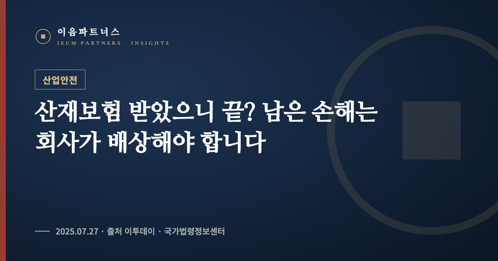

산재보험 받았으니 끝? 남은 손해는 회사가 배상해야 합니다

직원이 일하다 다치면 산재보험에서 보상이 나오니 회사 부담은 끝났다고 생각하기 쉽습니다. 그러나 대법원은 2025년 6월 26일, 산재보험금으로 메워지지 않은 손해가 있으면 회사가 그만큼 배상해야 하고, 그 계산도 근로자에게 더 유리한 순서로 해야 한다고 판단했습니다. 이 글에서는 사건 내용과 바뀐 계산 방식, 대표님이 확인할 점을 정리합니다.
산재보험은 회사의 배상 책임을 모두 대신해 주는 장치가 아닙니다. 현장 작업이 많은 회사라면 사고가 났을 때 회사가 직접 질 수 있는 돈이 얼마나 되는지 미리 따져 두는 것이 좋습니다. 궁금한 점은 카카오톡 채널 이음파트너스로 편하게 물어 주세요.
어떤 사건이었나
2021년 6월 한 건설회사의 신축공사 현장에서 근로자가 그라인더로 합판을 자르다 튄 톱날에 왼쪽 손목을 다쳤습니다. 근로복지공단은 업무상 재해로 인정해 장해급여 5,420만 원을 지급했습니다(이투데이).
근로자는 쉬는 기간이 길어져 보험금으로 메워지지 않은 일실수입(사고가 없었다면 벌었을 소득) 손해가 6,730만 원이라며 회사를 상대로 소송을 냈습니다. 1·2심은 회사가 위험한 작업을 하는 근로자를 보호할 의무를 다하지 않았다고 인정하면서도, 근로자의 부주의도 원인이라며 회사 책임을 70%로 제한했습니다.
계산 순서가 결과를 바꿨습니다
원심은 과실상계(피해자 잘못만큼 배상액을 줄이는 것)를 먼저 하고 보험금을 빼는 방식을 썼습니다. 손해 6,730만 원의 70%인 4,710만 원에서 이미 받은 보험금 5,420만 원을 빼니, 회사가 더 줄 돈은 없다는 결론이었습니다.
| 구분 | 내용 |
|---|---|
| 원심 방식 | 과실상계 후 공제: 손해 6,730만 원 × 회사 책임 70% = 4,710만 원 → 보험금 5,420만 원을 빼면 추가 배상 없음 |
| 대법원 방식 | 공제 후 과실상계: 손해에서 보험금을 먼저 뺀 뒤, 남은 금액에 회사 책임 비율을 적용 |
| 결과 | 원심을 깨고 서울중앙지방법원으로 돌려보냄(2023다297141) |
대법원은 산재보험의 목적과 사회보장 성격을 볼 때, 근로자 과실 몫의 보험급여는 근로복지공단이 최종적으로 부담하는 것이므로 보험금을 먼저 빼고 과실상계를 해야 한다고 봤습니다(국가법령정보센터 판례). 이렇게 계산하면 보험금을 넘는 손해에 대해 회사가 물어야 할 몫이 생길 수 있고, 정확한 금액은 다시 열리는 재판에서 정해집니다.
무엇이 새로운가
대법원 관계자는 이 사건이 “‘사용자 행위 재해’의 경우에도 공제 후 상계설이 적용되는지에 관해 처음으로 판시한 사안”이라고 설명했습니다(이투데이). 다른 사람의 잘못 없이 회사의 잘못만으로 일어난 산재에도 보험금을 먼저 빼는 방식이 적용된다는 뜻입니다. 산재 사고 뒤 근로자가 회사에 따로 손해배상을 청구하면, 회사가 부담할 금액이 이전 계산보다 커질 수 있습니다.
대표님이 지금 확인할 것
- 그라인더처럼 다치기 쉬운 공구 작업에 보호 장치와 작업 방법 교육이 갖춰져 있는지
- 산재 사고가 났을 때 보험급여 외에 회사가 따로 질 수 있는 배상 규모를 따져 본 적이 있는지
- 사고 경위와 평소 안전 조치를 기록으로 남겨 두고 있는지
참고한 자료
- 대법 “산재보험금보다 휴업 손실 크면 사업주가 배상해야” — 이투데이 (2025.07.27)
- 대법원 2025. 6. 26. 선고 2023다297141 판결 — 국가법령정보센터 (2025.06.26)
산재 사고 뒤 회사가 질 수 있는 부담을 미리 점검해 보고 싶으시다면 카카오톡 채널 이음파트너스로 연락 주세요.
※ 이 글은 일반적인 정보 제공을 위한 것으로, 개별 사안은 세무사·노무사 등 전문가와 함께 확인하시기 바랍니다.